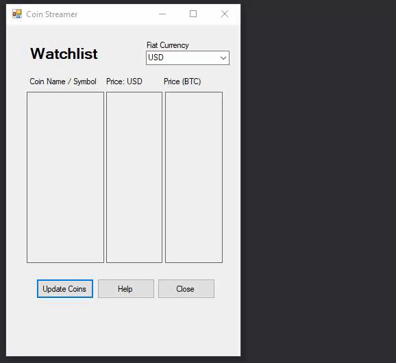
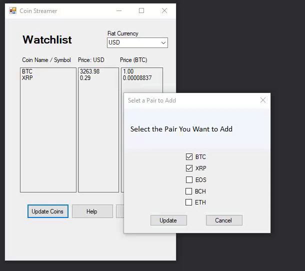
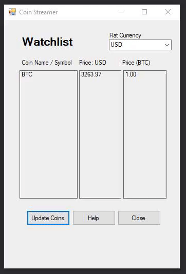

Frequently Asked Questions:
How to change fiat currency
To change the fiat currency, select the drop down menu in the upper left corner. From there, click the fiat currency you wish to view. The program will automatically update your fiat prices to the selected currency.

Refresh Rate
The refresh rate is now set at a default rate of updating every 5 seconds.
Add a pair
To add a pair, simply select the "Update Coins" button. From here, tick the boxes of the coins you would like to track.
Remove a pair
To remove a pair, select the "Update Coins" button. Untick any coins you no longer wish to follow.
Exit the application
To exit the application, click the exit button or the x at the top
